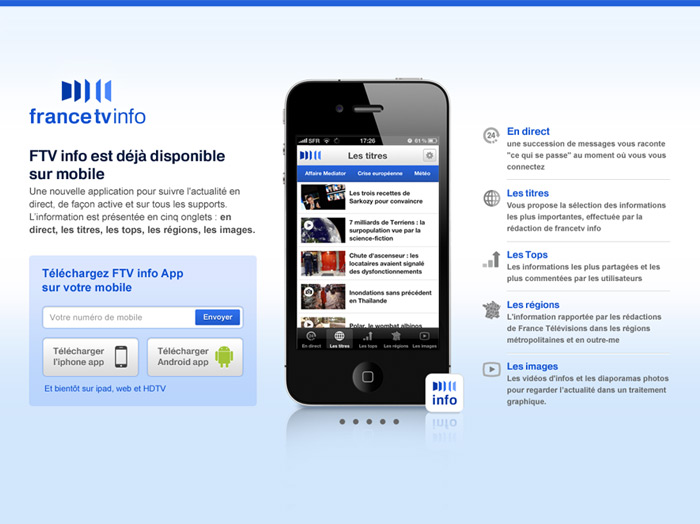
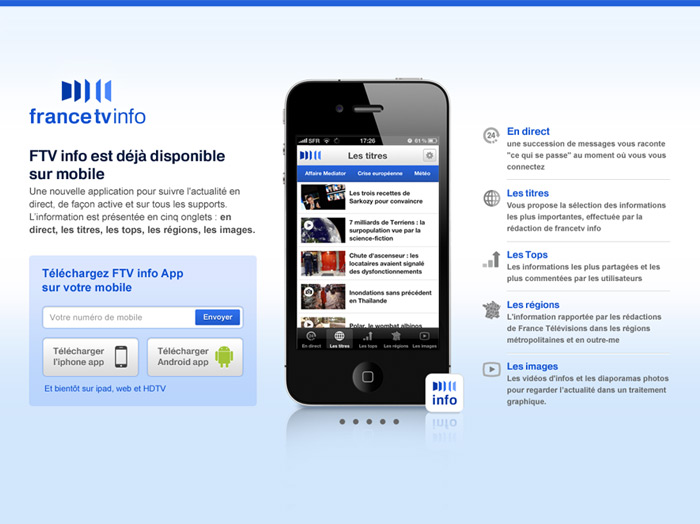
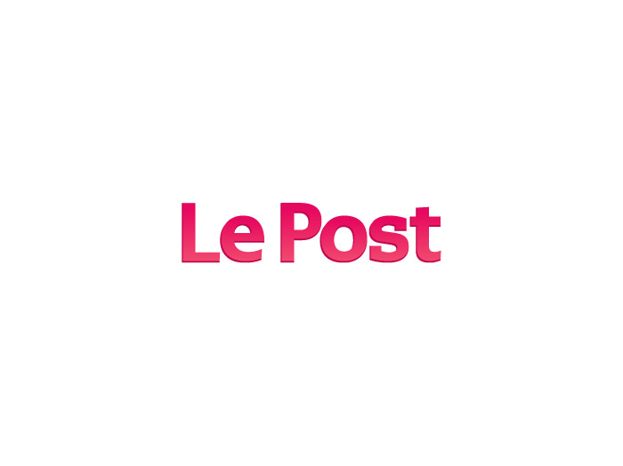
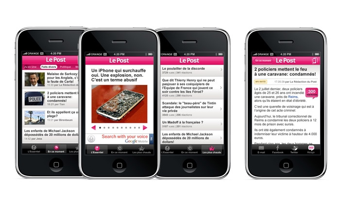

Sites, Apps and Branding
Designing News for French Audiences 🇫🇷
For 6 years, I worked closely with three traditional news media organizations in France to develop product and establish the over all design direction from ground-up for their new digital platforms.
France TV Info
France TV Info is the French Public television broadcaster France Télévisions’s first online news platform. In collaboration with the editorial strategists and engineering partners, I led the design and shipped a suite of product from iOS app, mobile site, desktop site, interactive features and election resultdata visualization for election coverage.


 

Groupe Sud Ouest
Groupe Sud Ouest is a Bordeaux-based news & media conglomerate that owns a handful of newspapers, magazines and TV stations in the southwest region of France. Along with a producer and a content strategist, we redesigned 7 regional news sites by collaborating with the local newsrooms to modernize the information architecture, standardize the site layout to simplify content management, and maximize programmatic ad offering to drive revenues.


Le Monde
Known as the New York Times in France, Le Monde is one of the oldest media brand based in Paris. To attract the younger generation of news consumers, Le Monde created Le Post.fr, a social news site that mixed stories and videos from journalists and readers alike. I led the design direction of the brand, website, iOS app and graphical features. Le Post.fr was sold to Huffington Post in 2012.

